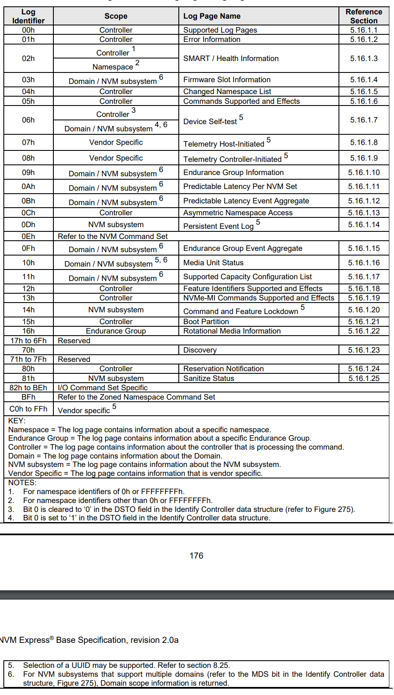

NVMe Log Pages Explained
My Test Drive
[root@r8402 ~]# nvme id-ctrl /dev/nvme0n1
NVME Identify Controller:
vid : 0x8086
ssvid : 0x1028
sn : PHLN939602VB3P2BGN
mn : Dell Express Flash NVMe P4610 3.2TB SFF
fr : VDV1DP25
rab : 0
ieee : 5cd2e4
cmic : 0
mdts : 5
cntlid : 0
ver : 0x10200
rtd3r : 0x989680
rtd3e : 0xe4e1c0
oaes : 0x200
ctratt : 0
rrls : 0
cntrltype : 0
fguid :
crdt1 : 0
crdt2 : 0
crdt3 : 0
oacs : 0x6
acl : 3
aerl : 3
frmw : 0x18
lpa : 0xe
elpe : 63
npss : 0
avscc : 0
apsta : 0
wctemp : 343
cctemp : 349
mtfa : 0
hmpre : 0
hmmin : 0
tnvmcap : 3200631791616
unvmcap : 0
rpmbs : 0
edstt : 0
dsto : 0
fwug : 0
kas : 0
hctma : 0
mntmt : 0
mxtmt : 0
sanicap : 0
hmminds : 0
hmmaxd : 0
nsetidmax : 0
endgidmax : 0
anatt : 0
anacap : 0
anagrpmax : 0
nanagrpid : 0
pels : 0
sqes : 0x66
cqes : 0x44
maxcmd : 0
nn : 1
oncs : 0x6
fuses : 0
fna : 0x4
vwc : 0
awun : 0
awupf : 0
icsvscc : 0
nwpc : 0
acwu : 0
sgls : 0
mnan : 0
subnqn :
ioccsz : 0
iorcsz : 0
icdoff : 0
fcatt : 0
msdbd : 0
ofcs : 0
ps 0 : mp:25.00W operational enlat:0 exlat:0 rrt:0 rrl:0
rwt:0 rwl:0 idle_power:- active_power:-
Get Log Page Identifiers

NVMe Express Base Specification
Error Information (01h)
This log page is used to describe extended error information for a command that completed with error or report an error that is not specific to a particular command. Extended error information is provided when the More (M) bit is set to ‘1’ in the Status Field for the completion queue entry associated with the command that completed with error or as part of an asynchronous event with an Error status type. This log page is global to the controller. This error log may return the last n errors. If host software specifies a data transfer of the size of n error logs, then the error logs for the most recent n errors are returned. The ordering of the entries is based on the time when the error occurred, with the most recent error being returned as the first log entry. Each entry in the log page returned is defined in Figure 206. The log page is a set of 64-byte entries; the maximum number of entries supported is indicated in the ELPE field in the Identify Controller data structure (refer to Figure 275). If the log page is full when a new entry is generated, the controller should insert the new entry into the log and discard the oldest entry. The controller should clear this log page by removing all entries on power cycle and Controller Level Reset.
Sample Output
[root@r8402 ~]# nvme error-log /dev/nvme0n1
Error Log Entries for device:nvme0n1 entries:64
.................
Entry[ 0]
.................
error_count : 0
sqid : 0
cmdid : 0
status_field : 0(SUCCESS: The command completed successfully)
phase_tag : 0
parm_err_loc : 0
lba : 0
nsid : 0
vs : 0
trtype : The transport type is not indicated or the error is not transport related.
cs : 0
trtype_spec_info: 0
.................
...SNIP...
Entry[63]
.................
error_count : 0
sqid : 0
cmdid : 0
status_field : 0(SUCCESS: The command completed successfully)
phase_tag : 0
parm_err_loc : 0
lba : 0
nsid : 0
vs : 0
trtype : The transport type is not indicated or the error is not transport related.
cs : 0
trtype_spec_info: 0
.................
SMART / Health Information (02h)
This log page is used to provide SMART and general health information. The information provided is over the life of the controller and is retained across power cycles. To request the controller log page, the namespace identifier specified is FFFFFFFFh or 0h. For compatibility with implementations compliant with NVM Express Base Specification revision 1.4 and earlier, hosts should use a namespace identifier of FFFFFFFFh to request the controller log page. The controller may also support requesting the log page on a per namespace basis, as indicated by bit 0 of the LPA field in the Identify Controller data structure in Figure 275.
Sample Output
[root@r8402 ~]# nvme smart-log /dev/nvme0n1
Smart Log for NVME device:nvme0n1 namespace-id:ffffffff
critical_warning : 0
temperature : 26 C
available_spare : 100%
available_spare_threshold : 10%
percentage_used : 0%
endurance group critical warning summary: 0
data_units_read : 4,002,753
data_units_written : 255,875,492
host_read_commands : 45,714,473
host_write_commands : 1,620,770,593
controller_busy_time : 372
power_cycles : 150
power_on_hours : 5,219
unsafe_shutdowns : 99
media_errors : 0
num_err_log_entries : 0
Warning Temperature Time : 0
Critical Composite Temperature Time : 0
Thermal Management T1 Trans Count : 0
Thermal Management T2 Trans Count : 0
Thermal Management T1 Total Time : 0
Thermal Management T2 Total Time : 0
Firmware Slot Information (03h)
This log page is used to describe the firmware revision stored in each firmware slot supported. The firmware revision is indicated as an ASCII string. The log page also indicates the active slot number. The log page returned is defined in Figure 209
Sample Output
[root@r8402 ~]# nvme fw-log /dev/nvme0n1
Firmware Log for device:nvme0n1
afi : 0x1
frs1 : 0x3532504431564456 (VDV1DP25)
frs2 : 0x3532504431564456 (VDV1DP25)
Changed Namespace List (04h)
NOTE This command is not currently supported because the drives currently only have one namespace.
This log page is used to describe namespaces attached to the controller that have:
- changed information in their Identify Namespace data structures (refer to in Figure 146) since the last time the log page was read;
- been added; and
- been deleted.
The log page contains a Namespace List with up to 1,024 entries. If more than 1,024 namespaces have changed attributes since the last time the log page was read, the first entry in the log page shall be set to FFFFFFFFh and the remainder of the list shall be zero filled.
Commands Supported and Effects (05h)
This log page is used to describe the commands that the controller supports and the effects of those commands on the state of the NVM subsystem. The log page is 4,096 bytes in size. There is one Commands Supported and Effects data structure per Admin command and one Commands Supported and Effects data structure per I/O command based on:
- the I/O Command Set selected in CC.CSS, if CC.CSS is not set to 110b; and
- the Command Set Identifier field in CDW 14, if CC.CSS is set to 110b.
Sample Output
nvme effects-log /dev/nvme0n1
Device Self-test (06h)
This log page is used to indicate:
- the status of any device self-test operation in progress and the percentage complete of that operation; and
- the results of the last 20 device self-test operations.
The Self-test Result Data Structure contained in the Newest Self-test Result Data Structure field is always the result of the last completed or aborted self-test operation. The next Self-test Result Data Structure field in the Device Self-test log page contains the results of the second newest self-test operation and so on. If fewer than 20 self-test operations have completed or been aborted, then the Device Self-test Status field shall be set to Fh in the unused Self-test Result Data Structure fields and all other fields in that Self-test Result Data Structure are ignored.
Other NVMe CLI Commands
List All NVMe Drives
nvme list
Lists all the NVMe SSDs attached: name, serial number, size, LBA format, and serial